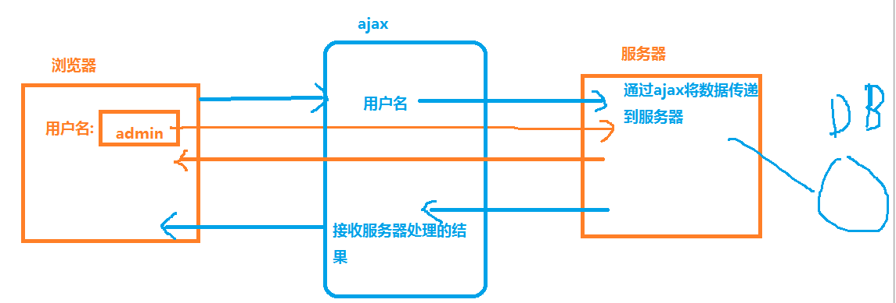

梳理知识点
1、连接数据库步骤
设置数据源
选择数据库
设置字符编码
编写sql语句
执行sql mysql_query() select-- 返回结果集 mysql_fetch_array() 每次取一行 返回数组
insert update delete -- 返回受影响的行数
2、ajax
什么是ajax ： 异步的JavaScript and xml
当用户向服务器请求少量的数据时，可以使用ajax来完成，从而 减少带宽，提高用户体验
ajax作用 ： 页面无刷新（局部刷新）
【注】：并不是所有效果都用ajax，ajax虽然减少了对服务器的请求，但是增加了步骤，所以代码会增加，一般用ajax实现智能联想关键词搜索，和用户名注册时存在的检测
客户端和服务器的数据交互 ： 【注】：和服务器进行小批量的数据交换才用ajax

3、同步和异步
异步 ： 同时执行 （生活中的同步） 【注】：目前所学的异步的有 定时器 回调函数 和 ajax
异步--非阻塞模式 前面的代码不会影响后面代码的执行 【注】：异步就是补一个节奏，可以并行执行
同步 ： 顺序执行 （生活中的异步）
同步 --- 阻塞模式 前面代码如果出错，后面代码不会执行
4、ajax的执行过程
打电话 ：
1、买手机
2、拨号 建立连接
3、打电话方说
4、对方回信息
ajax请求过程：
1、创建一个ajax对象 【注】：存在兼容问题 request:请求，需求 active：积极的，活跃的 micro：微小的，基本的 soft：软的，柔和的
var ajax = new XMLHttpRequest();//创建ajax对象，存在兼容问题 request:请求，需求
var ajax = new ActiveXObject("Microsoft.XMLHTTP");//输出结果object，ie不支持输出详细类型 active：积极的 micro：微小的，基本的 soft：软的，柔和的
alert(ajax);//[object XMLHttpRequest] ajax的对象类型
2、建立和服务器连接 通过ajax的 open();
ajax.open("get","1.txt");//2、建立和服务器连接,ajax的open方法，第一个参数是传送方式，两种：get和post，get是url传送，即地址或路径后的？的内容传送的，post方法ajax一般不使用，麻烦
3、向服务器发送数据 通过ajax的 send() 方法
ajax.send();//发送数据，在ajax的get方法里send不需要加参数，直接使用，在post方法中send参数是想要传送的数据，还需要做其他操作
4、服务器处理数据 并将结果返回到客户端（这步骤才是异步） 服务器返回的结果 在 ajax.responseText 中取出 response：响应
【注】：从服务器中取出的数据在ajax.response中存储
ajax状态值说明：
0 ：请求未初始化（还没有调用open） 【注】：请求初始化，即还没调用open方法，顶多设置了ajax对象
1 ：请求已经建立，但是还没有发送（还没有调用send()） 【注】：请求已经建立，但是服务器并没有开始处理，即顶多完成了open建立与服务器的链接和send 向服务器传送数据操作
2 : 请求已发送，正在处理中 【注】：服务器已经开始处理，但是数据还没有开始处理，是ajax.onreadystatechange中第一次状态改变
3 : 请求在处理中，通常响应中已有部分数据可以用了，但是服务器还没有完成响应的生成 【注】：开始处理数据了，但若数据太多的话，处理不完
4 ：响应已完成 您可以获取并使用服务器的响应了 【注】：数据处理完成，开始响应，即渲染到html页面上
//ready：准备好的，准备 state：状态，状况，国家 change：改变
ajax.onreadystatechange = function(){//利用ajax的状态改变事件，状态一旦改变就触发事件
//ajax访问服务器时触发五次服务器状态改变
/*alert( ajax.readyState + "----" + ajax.responseText );
//状态改变了三次，所以有三次输出
//第一次输出 2 ---- 2 : 请求已发送，服务器刚刚开始处理 ，但数据一点点还没处理
//第二次输出 3 ---- “内容 ” 3 : 请求在处理中，通常响应中已有部分数据可以用了，但是服务器还没有完成响应的生成
// 第三次输出 4 ----“完整内容” 4 ：响应已完成 您可以获取并使用服务器的响应了---响应就是把内容渲染到html界面上*/
if( ajax.readyState == 4 && ajax.status == 200 ){//ajax.readyState state:状态 获取服务器状态改变值，反应ajax传送过程中的执行的程度 ajax.status status:状态 获取状态码 404 路径不正确 200交易成功
//当ajax传送的数据不正确是，也会触发服务器的状态改变所以也会有输出，但输出结果是<html><body><h1><h3>未找到文件/ajax/12.txt，请检查访问路径是否正确</h3></h1></body></html> 即 404 not found
alert( ajax.responseText );
}
}
}
5、缓存问题
缓存 ： 当向服务器发送两个完全相同的路径时，第二次ajax请求的数据直接从浏览器的缓存上获取 如果请求的数据有变动，缓存的信息不会及时更改
解决办法 ： 在路径上加一个参数，值是一个随机数
//ajax.open("GET", (this.index+1) + ".txt?id="+Math.random() );
ajax.open("GET", (this.index+1) + ".txt?id="+new Date().getTime() );
1.txt?id=1
1.txt?id=2
编码问题 ：
encodeURI("李春娥") 向服务器发送数据 做中文格式编码转换
6、向服务器发送数据
get 路径传值 传递的数据量少 【注】：把url路径后面？的数据传递，数据和数据之间用&连接，字符串模板拼接字符串更方便
var date = `status=register&userID=${oT1.value}&password=${oT2.value}`;
post 非url传递 传递的数据量大
get 或 post 都可以发送或获取数据
//post 方式向服务器发送数据时 需要设置请求头部
ajax.setRequestHeader("content-type","application/x-www-form-urlencoded")
ajax.send("uname=admin&upwd=123");
【注】：用post方式传送数据实例；
html文件内容
<script>
var ajax = null;
if( window.XMLHttpRequest ){
ajax = new XMLHttpRequest();
}else{
ajax = new ActiveXObject("Microsoft.XMLHTTP");
}
ajax.open("post","ajaxpost.php");
//post 方式向服务器发送数据时 需要设置请求头部
ajax.setRequestHeader("content-type","application/x-www-form-urlencoded");
ajax.send("uname=chenkang&upwd=123");
ajax.onreadystatechange = function(){
if( ajax.status==200 && ajax.readyState==4 ){
alert(ajax.responseText)
}
}
</script>
php文件
<?php
$uname = $_POST["uname"];
$upwd = $_POST["upwd"];
echo $uname,$upwd;
?>
7、字符串和对象的类型转换
字符串转对象 : JSON.parse() eval()
【注】：用eval()转的时候，转的字符对象前后必须拼接 左右括号
对象转字符串 ： JSON.stringify()
eval转对象实例
<script>
var ajax = null;
if( window.XMLHttpRequest ){
ajax = new XMLHttpRequest();
}else{
ajax = new ActiveXObject("Microsoft.XMLHTTP");
}
ajax.open("get","data.json");
ajax.send();
ajax.onreadystatechange = function(){
if( ajax.status==200 && ajax.readyState==4 ){
var str = ajax.responseText;
console.log(str);
console.log(typeof str);
var arr1 = JSON.parse(str);
console.log(arr1);
console.log(typeof arr1);
var arr2 = eval( "(" + str +")" );//eval也可以把字符串对象装成json对象，字符串对象就是那些存入cookie啊，数据库中的对象，通过eval转的结果和JSON.parse的结果完全一样，不过使用方法必须在转的内容前后拼接字符 左右括号
console.log(arr2);
console.log(typeof arr2);
}
}
</script>
data.json中的数据
[
{"pid":"01","pname":"苹果","price":12},
{"pid":"02","pname":"香蕉","price":23},
{"pid":"03","pname":"火龙果","price":56}
]
8、ajax请求接口
接口 ：url路径 open("get",接口)
接口信息 ：
接口路径（后台路径 xxx.php xxx.jsp ）
接口参数(可选)
接口返回值
例如 ：
接口参数 : uname
接口返回值 ：
1 ： 不存在
2 : 存在
ajax的执行实例
<script>
var oUl = document.querySelector("ul");
var ajax = null;
if( window.XMLHttpRequest ){//创建ajax对象，并解决和低版本ie的兼容问题
ajax = new XMLHttpRequest();
}else{
ajax = new ActiveXObject("Microsoft.XMLHTTP");
}
ajax.open("get","data.json");//建立连接，搭建桥梁，把传送数据的位置找到
ajax.send();//传送数据
ajax.onreadystatechange = function(){//服务器处理完成，并将结果返回给客户端
if( ajax.readyState==4 && ajax.status==200 ){
var str = ajax.responseText;
var arr = JSON.parse(str);
var res = "";
for( var i = 0; i < arr.length; i++ ){
res += `<li>pid:${arr[i].pid},pname:${arr[i].pname},price:${arr[i].price}</li>`;
}
oUl.innerHTML = res;
}
}
</script>